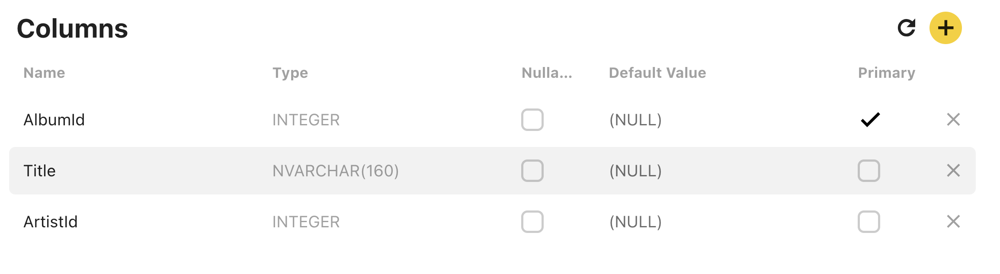
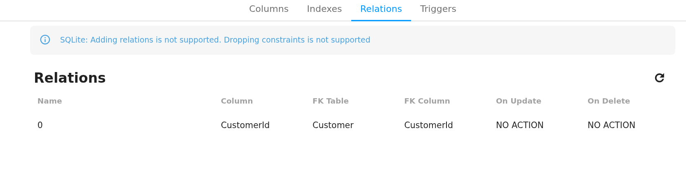
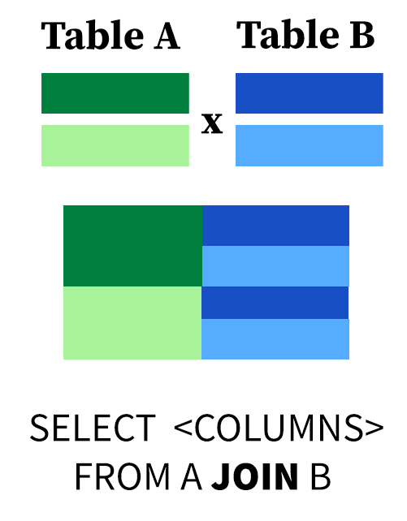
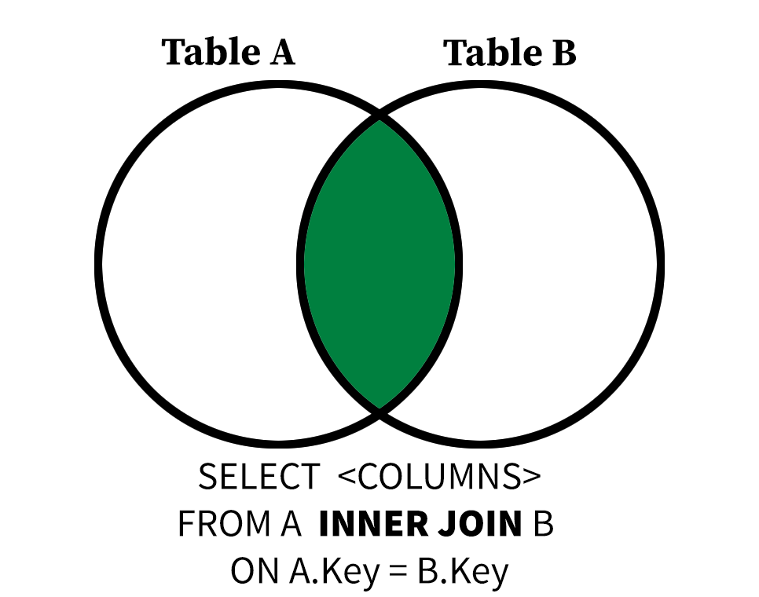

We have now learned the seven potential SQL clauses, and these make up the backbone of most SQL SELECT queries.
SELECT - filter, aggregate, and assign aliases to columns
FROM - selects which tables to read from
WHERE - filter input rows based on conditions
GROUP BY - aggregate rows by their values in a column or columns
HAVING - filter grouped rows
ORDER BY - sort output
LIMIT - restrict output to the first n rows
Keeping track of all the potential clauses can be intimidating, so it’s best to start with the simple parts of you query and add complexity. For example, always start with the FROM clause, to make sure you’re reading from the correct table(s), before filtering to your desired rows with WHERE. Don’t worry about HAVING until you’re confident with the groups formed with GROUP BY.
Quiz: Putting It All Together
Write a query that counts the number of invoices(rows) in each BillingState, BillingCountry group in the Invoice table, filtered to rows where BillingState is not null, with groups filtered to groups with at least 5 rows, ordered by BillingState in ascending alphabetical order, and restricted to the first five results. Use the alias Invoices for the number of rows per group.
This is a complex query, so start from the following template with hints!
SELECT BillingState, BillingCountry, --- AS ----FROM Invoice WHERE--- IS NOT NULLGROUPBY BillingState, BillingCountryHAVINGCOUNT(*) ---ORDERBY BillingState LIMIT;
TipAnswer
You will need to use COUNT(*) or the Invoices alias in the HAVING clause get your desired results here!
SELECT BillingState, BillingCountry, COUNT(*) as InvoicesFROM Invoice WHERE BillingState ISNOTNULLGROUPBY BillingState, BillingCountryHAVINGCOUNT(*) >5ORDERBY BillingStateLIMIT5;
BillingState
BillingCountry
Invoices
AB
Canada
7
AZ
USA
7
BC
Canada
7
CA
USA
21
DF
Brazil
7
Primary Keys
A schema diagram for the example music database
Remember this diagram? It’s time to decode it.
Each table is one box.
Underneath the name of each table is a list of every column in that table, followed by that field’s data type.
The first field, indicated in bold, is special. This bolded field is called a primary key.
A primary key is a field (or sets of fields) that uniquely identifies rows within a table. Every primary key must be not null, and no two rows can have the same primary key. You will see real-world databases with primary keys that are made up of combinations of fields, and the same principles apply to each unique set of values. Primary keys often take the form [tablename]Id.
You can also evaluate which field functions as the primary key from within the Beekeeper Studio interface. In the interface pane on the left side of the screen, right-click on the name of a table and click View Structure.

The View Structure screen for the Album table
A new tab in the Beekeeper Studio interface will open displaying information about each column in the table. The Primary checkbox indicates whether or not the field is a primary key. The Nullable checkbox indicates whether or not a field can take on a nul value. The Type column lists the data type of each field.
Quiz: Primary Keys
Which of the following is the primary key of the Album table?
Database designers decide which fields in a table can be null, their data types, and their default values based on the properties of the data stored in the database. These constraints have important ramifications for how the database interacts with software and the validity of its records. As a database user, it is important for you to understand what the constraints of your database are, even if you don’t have the authority to change them.
Quiz: Nullables
Which of the following fields in the Invoice table can be null? Ask yourself why.
Foreign Keys
It’s time to tackle the final, undiscussed element of the schema diagram: the connections between tales. Each line in the schema diagram represents a foreign key relationship.
A foreign key is a field (or set of fields) in one table whose values are a primary key in another table. That means that every (non-null) foreign key value must have a corresponding row in another table.
Take the Album table. The Album table has AlbumId for its primary key, but the ArtistId field is a foreign key linked to the Artist table. That means that if we see an ArtistId of 6 in Album, we can be confident that the row in Artist with ArtistId=6 corresponds to the same entity.
As viewing schema diagrams is a premium feature of Beekeeper Studio, I have provided a diagram as generated in another program for you. Luckily, you can view secondary key relationships in the View Structure -> Relations tab of Beekeeper Studio.

The View Structure/Relations screen for the Invoice table
In the screenshot above, the Invoice table lists CustomerId as being a FK or foreign key, tied to the Customer tabler. This means that all CustomerId values in Invoice must correspond to exactly one row in Customer.
There are 4 types of relationships between database tables:
One to One - each item in the first table has exactly one match in the second table.
One to Many - each item in the first table is related to many items in the second table, sometimes represented as 1 to * or 1 to ∞
Many to One - many items in the first table is related to one item in the second table.
Many to Many - many items in the first table are related to many items in the second table.
Schema diagrams will often use special symbology to indicate these relationships to the users of a database. I selected the Chinook database because the distinction between 1:1 to 1:* relationships is fairly intuitive.
For example, it’s only natural that a CustomerId can be linked to multiple purchases in Invoice.
Quiz: Foreign Keys
Use Beekeeper Studio to view the structure and contents of the InvoiceLine and Invoice tables. Which of the following statements about these tables is true?
Why Not Just Use One Big Table?
When you look at songs on a music store or on a streaming platform, you see the information related to each song as one big table. The album, artist, and track information is included on every row, even if much of that information is repeated. For example, we know that every track on AlbumId=3 will have the same album title, but that title is displayed over and over to the user.
Databases are structured to reduce redundancy through a design process called normalization. Normalization makes databases more resilient to human error. I chose the Chinook database because it already demonstrates good database design principles. It is broken down into several tables to make sure that each “fact” (relationship between fields) stated as few times as possible.
We can reconstruct larger tables through a process called joining. Good database tables are easy to join with each other, provided we take advantage of their foreign key relationships.
A Gentle Introduction to JOIN
Joining tables in SQL can get messy and complicated. We will focus on simple joins based on best practice that produce consistent, meaningful results.

A visual explanation of the cross product
All JOIN operations represented a subset of the cross-product (or Cartesian product) (though they aren’t implemented this way) between two tables. The cross-product of tables A and B is the sum of all possible combinations of rows in A and B, which creates a table of size (rows in A * rows in B).
This query computes the cross-product of Customer and Invoice using the JOIN keyword.
SELECT*FROM Customer JOIN Invoice;
The Customer table has 59 rows and 12 columns.
The Invoice table has 412 rows and 9 columns.
The result of this query has 59 * 412 = 24308 rows and 12 + 9 = 21 columns.
Observe that columns with the same name are repeated in the results.
This query could tell us something useful. From the structure of the database, we know that every purchase in Invoice has an associated CustomerId. Joining the two tables could give us the purchase history of each customer, linking name and location information to purchases.
The problem is that only rows where the CustomerId is shared between two tables provide meaningful information. That is, there isn’t a meaningful link between an invoice with CustomerId=3 and the first and last name of CustomerId=5.
JOIN is followed by the keyword ON, which allows joins based on conditional relationships between two tables. All JOIN operations you will learn going forward will have an ON condition.
SELECT*FROM Customer JOIN Invoice ON Customer.CustomerId = Invoice.CustomerId;
The output of this query has 412 columns and 21 rows.
This makes sense if we think carefully. Each of the 412 rows in Invoice has a non-null CustomerId, and therefore (as a foreign key) a matching a CustomerId in the Customer table.
Notice that we used Table.field to specify field names in the output of the join. This is because tables can have fields with the same name.

A visual explanation of an inner join
The JOIN we just performed is called an INNER JOIN. In the future, I will use the keyword INNER JOIN to refer to these joins to distinguish them from LEFT and FULL OUTER JOINS.
We can now filter our joined input using SELECT and WHERE clauses. The following query gives the FirstName, LastName, InvoiceDate, and Total of each customer and their associated purchases, provided the customer has the string John somewhere in their name.
Let’s say you want to find the AlbumId, Title, and (Artist) Name of every album in the Album table with the word 'Greatest' in its title. This will require you join the Album table to the Artist table. I have provided boilerplate to get you started.
Use ArtistName as an alias for Name for clarity.
Order by Title in ascending order.
Don’t forget to express your join fields in table.field form.
SELECT---FROM Album JOIN Artist ON--- = -----WHERE Title LIKE---ORDERBY---'
TipAnswer
SELECT AlbumId, Title, Name as ArtistNameFROM Album JOIN Artist ON Album.ArtistId = Artist.ArtistId WHERE Title LIKE'%Greatest%'ORDERBY Title;